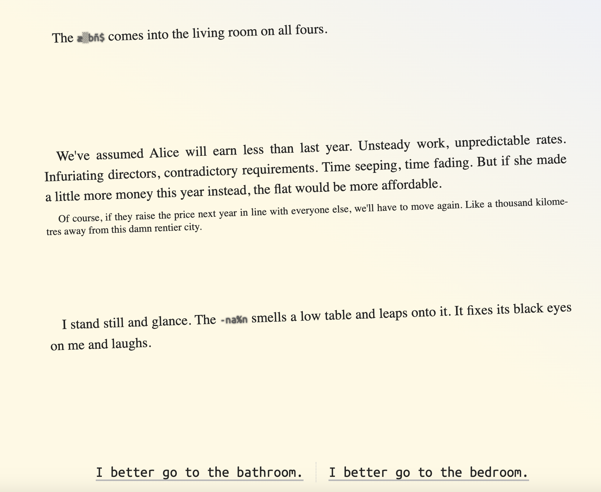
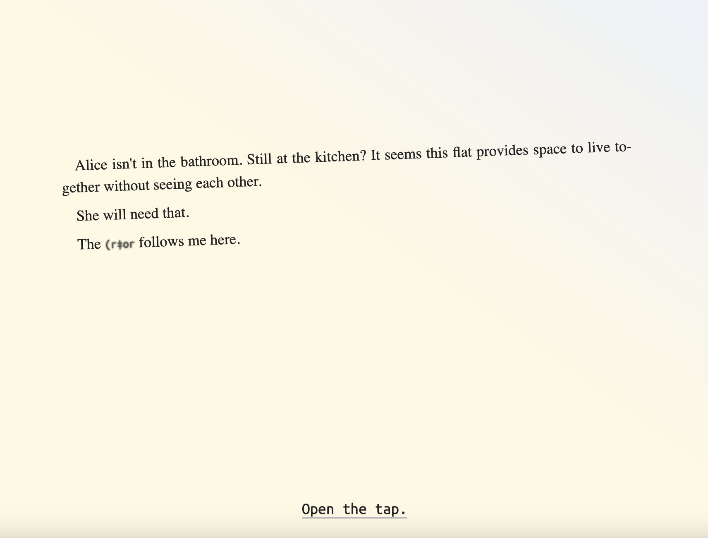

The setting switches as Daniel goes back to one of his memories which then lead to his current setting and time but the layout of the text changes. It goes from straight lines to crooked. I think it was changed to that because the creator wanted to make the scene more eerie. I think if they included more images and not just sometimes, or even an animation or noise, it would help create that image. It is slightly confusing and I'm not sure if I understood correctly either.

I do find it cool that they included text that constantly change and unreadable. I am not sure how to do that so I definitely think it's really cool to include that. I feel like it was given more effort just by including that. I do feel like this made the story take a turn and introduce fear into the mix of suspense and mystery. However, I'd like to know more backstory to this creature. Like will the name ever be revealed or will it never come to light? I feel like more context to the creature should've been given because it left me confused as to what's really going on aside from saying that he's hungry and it was representing what was once a populated village to a deserted village.